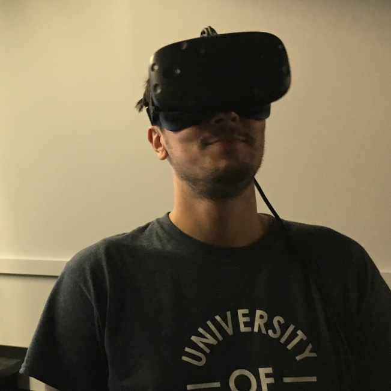

This year I was in attendance at the NIPS conference in Long Beach, California. During my stay in Long Beach, I met many interesting people from all over the world from a wide range of institutions. This conference also provided me with the opportunity to meet with experts from my current field of study (i.e. Bayesian Optimization) as well as the opportunity gain insight into the current state-of-the-art in other disciplines. Here, I will briefly go over some highlights from the conference that I found to intriguing.
There was so much hype built up around this event that I did not know what to expect from the conference. Firstly, I was fortunate enough to obtain my pass the night before the beginning of the conference. This allowed me to get a good seat for the talks in hall A for the morning sessions. For me, the first notable talk was on deep Gaussian processes (deep GPs). The speaker of this talk (Neil D. Lawrence) summarized deep GPs in a very intuitive way, by visualizing the latent space of each layer in the deep GP for an interesting 1-dimensional problem. Then, on Monday afternoon the talks by Josh Tenenbaum and Vikash K. Mansinghka titled "Engineering and Reverse Engineering Intelligence with Probabilistic Programs, Program Induction and Deep Learning" were inspiring. Their work focuses on modeling the world or explaining and building new models as the world grows. This talk emphasized the point that we are not yet close to such an objective. One method propose method to make headway in this problem is to use probabilistic programs where learning algorithms can train in a simulated environment and then apply this gained knowledge to the real world. Intuitively this makes sense to me, since many people that I know who play video games where driving is simulated did not gain very much knowledge from attending driving school. Check out their work for more details if you are interested.
For the remainder of the week there were many interesting (in many cases this is an understatement) talks and I will not summarize them all here as I need to spend time on my own research. However, I would like to say that the invited talks, the orals as well as the poster presentations were very interesting and that there is yet much work ahead of all of us. I would also like to acknowledge the panellists from the symposium for meta-learning as they provided deep insight from multiple fields. In terms of the workshops, on the Friday I was in attendance at the workshop for machine learning for molecules and materials. This was provided me with a window into the world of chemistry and material science where there are many practical examples and open ended problems. As for the workshop on Saturday, I attended the workshop for Bayesian optimization for science and engineering. All of the presentations I found to be inspiring. I also gave a spotlight presentation for my work on Bayesian optimization under uncertainty as well as two poster sessions where I had the opportunity to explain my work to experts as well as people who simply wanted an overview. I would like to give a special thanks to the organizers for handling all of the administration associated with making this workshop possible.
Overall, I had a great week in Long Beach absorbing the ambiance of NIPS. I am looking forward to NIPS next year in Montreal, Canada to follow up with the research from this year.